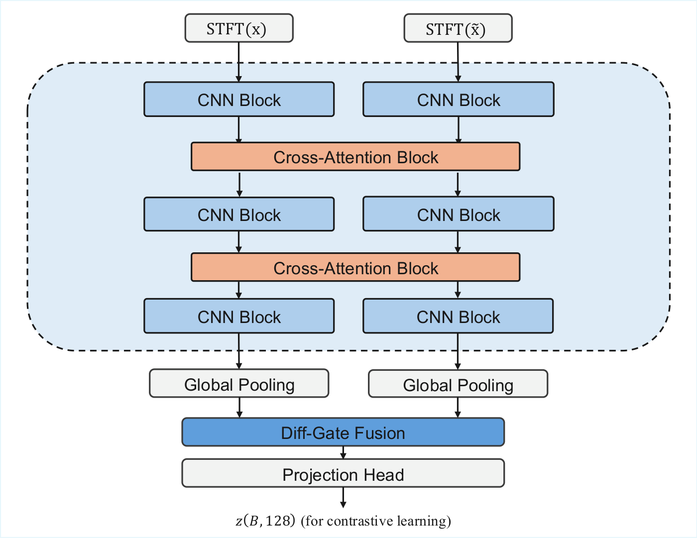
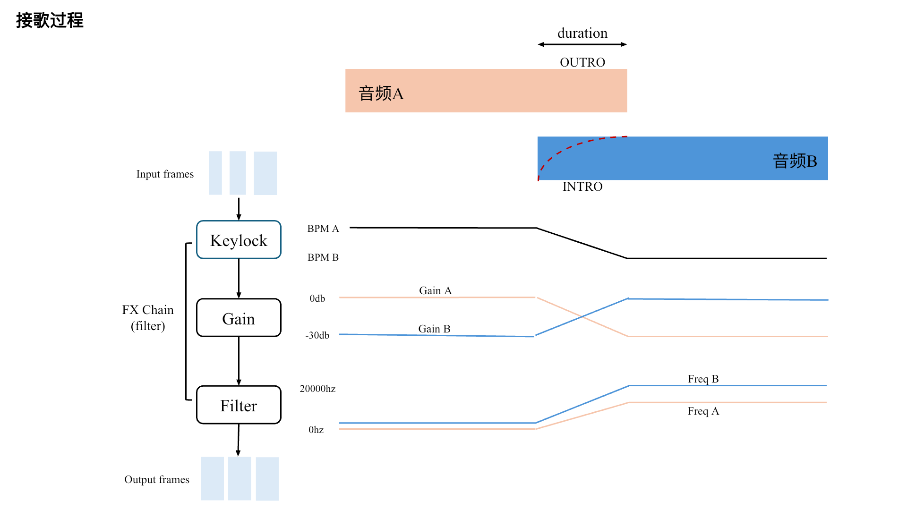

RelFx
Learning how audio effects change between recordings, rather than encoding one recording's absolute effect state. Representation training does not require dry reference recordings.
Music and audio AI researcher at Tencent Music Entertainment.
I am a music and audio AI researcher at Tencent Music Entertainment, working on intelligent audio processing and interactive music systems.
I lead projects from problem formulation and algorithm design through system development, evaluation, and product deployment. My work spans audio effects representation learning, automatic song transitions, music-aware sound enhancement, natural-language audio control, and driving-adaptive music.
I combine research with hands-on engineering to turn new ideas into practical listening experiences.
I hold a master's degree from Fudan University.

Learning how audio effects change between recordings, rather than encoding one recording's absolute effect state. Representation training does not require dry reference recordings.

Music-aware transition planning and audio-effect control for continuous listening, with playlist reranking to find better song-to-song matches.

MuseLM's music understanding and the Galaxy Sound expert system tailor audio processing to different sections of a song.

Driving-adaptive music: an in-car system that maps driving conditions to stem-level audio effects, making music respond to the journey.
Turns everyday language into audio-effect adjustments, with multi-turn editing, manual controls, and before-and-after listening.
A structured index of open resources for intelligent audio effects, representations, mixing, mastering, and evaluation.
Low-latency beat and downbeat activation estimation for music analysis and production-oriented applications.